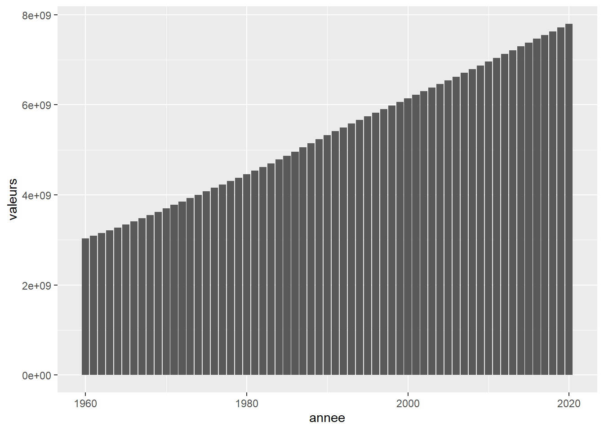

TP Bookdown
1
Vue mondiale
1.1
Chart production par année
1.2
Chart energie matiere
2
Vue Continentale
2.1
Chart production par année et par continent
2.2
Chart energie matiere
3
map
3.1
Row
3.1.1
Population
3.2
Row
3.2.1
Production
3.3
Row
3.3.1
Energie
Published with bookdown
Tp Bookdown
Tp Bookdown
Aurélien EBERSOLD
2022-06-24
Chapter1
Vue mondiale
1.1
Chart production par année
Chart population par année

1.2
Chart energie matiere
Chart type d’energie